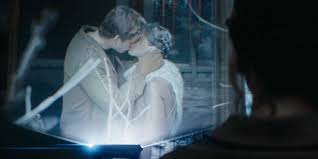

Connecting Propaganda in The Hunger Games to the Real World
Below are real examples of how propaganda has been used--by democracies or by dictators--to galvanize supporters and shape public perceptions of issues like nationalism and war.
Mussolini and "Projecting Power"

The above image was used by Benito Mussolini, the dictator of Italy from 1922 to 1943 who is credited as the creator of the fascist movement. It was created with the goal of making him seem strong by harvesting wheat without a shirt, though it was clearly staged.
As The Book & Movie Guy explains in his Youtube video, this directly parallels President Snow "projecting strength," though not always in such a literal sense; rather, he projects the Capitol's political strength by depicting it as an all-powerful institution, controlling the land and the people of Panem.
The Panopticon & Fear of Surveillance

Above is an image taken from inside the Presidio Modelo, a prison in Cuba inspired by the concept of a "panopticon," where every prisoner can be observed by a single officer at all times without knowing. Panem is, in a sense, a panopticon itself, because every citizen can (in theory) be spied on by President Snow or the authorities at all times with the number of security cameras present, particularly in the arenas.
Although people aren't literally always being watched, it's the fear of being watched that's an effective method of control--a form of propaganda, reinforcing the message that the Capitol can see you at all times. President Snow uses this against Katniss at the beginning of Catching Fire when he reveals to her that he observed her kissing Gale. This results in Katniss fearing Snow watching her at all times, and so she performs being madly in love with Peeta as a result.
